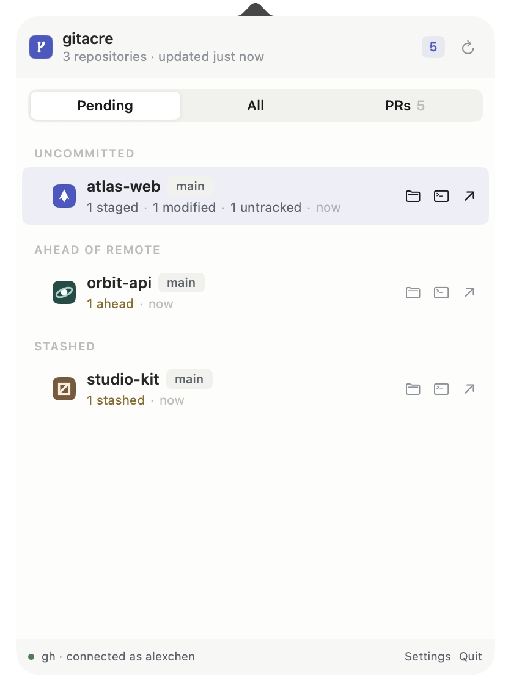
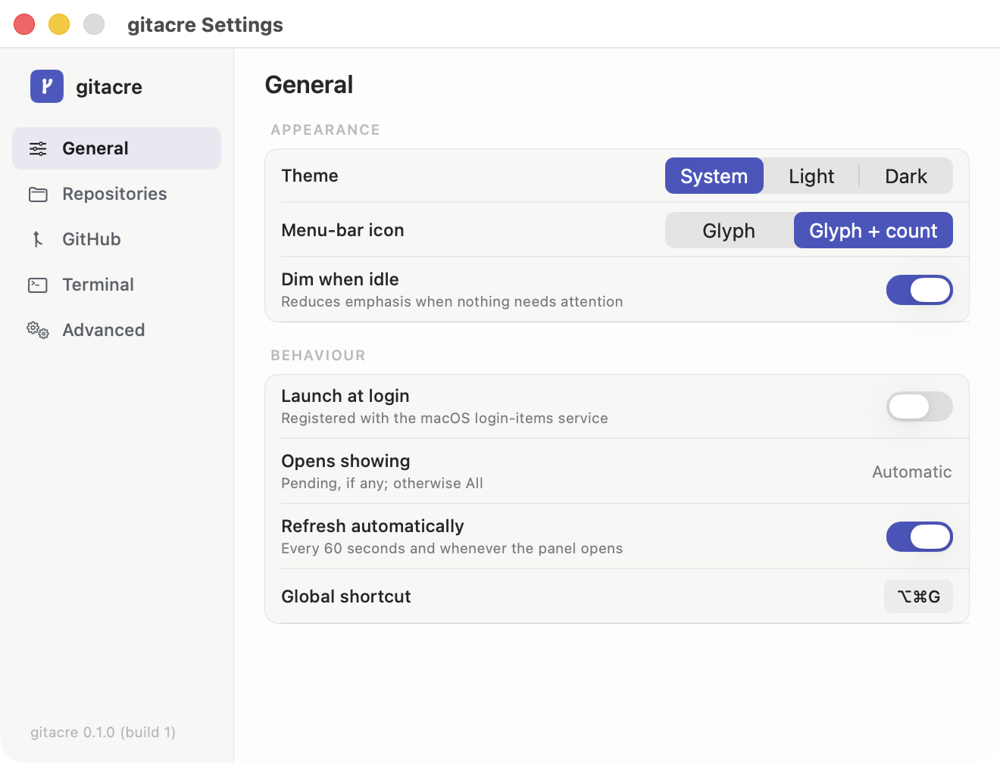

Pending work
Staged, modified, untracked, ahead, behind, conflicted, and stashed states in one compact list.
A native Git companion for macOS
Local changes, linked worktrees, and pull requests—kept in one quiet menu-bar app.
1.0.0-beta.4 · macOS 14+ · Apple silicon + Intel

The essentials
Staged, modified, untracked, ahead, behind, conflicted, and stashed states in one compact list.
Linked checkouts stay beneath their repository, with branch-level status and direct actions when expanded.
Review requests and your open PRs use the GitHub CLI session already active on your Mac.
Fits your setup
Choose the folders you work from and the terminal you prefer. gitacre quietly refreshes in the background and opens where your work already lives.

Your tools. Your preferences. Native macOS settings.
Repository scanning happens locally. GitHub access stays with the official gh session you control. gitacre never reads or stores your token.
Available now